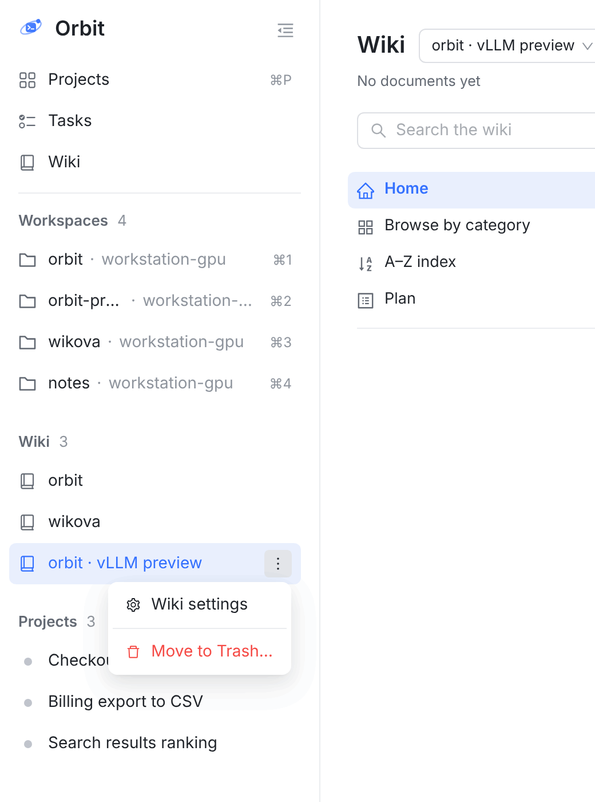
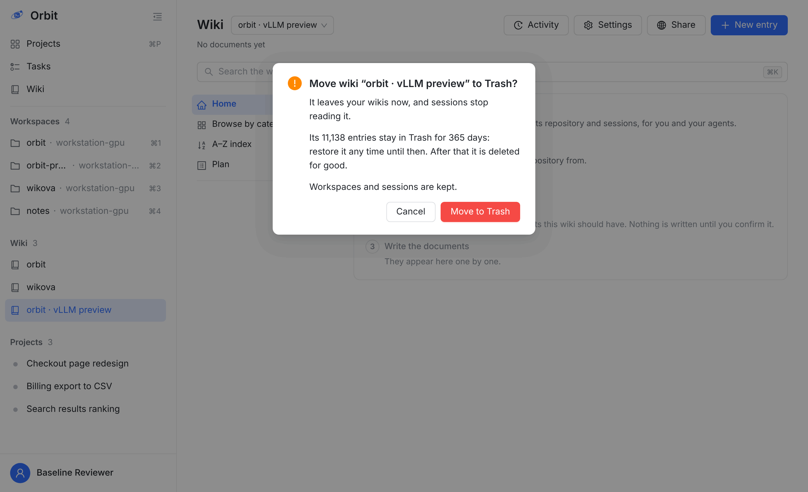
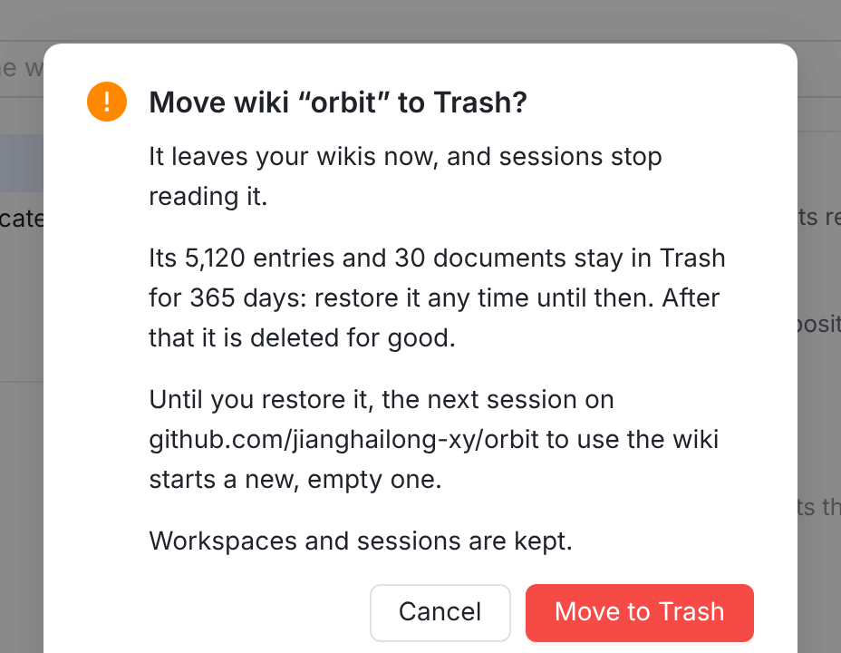
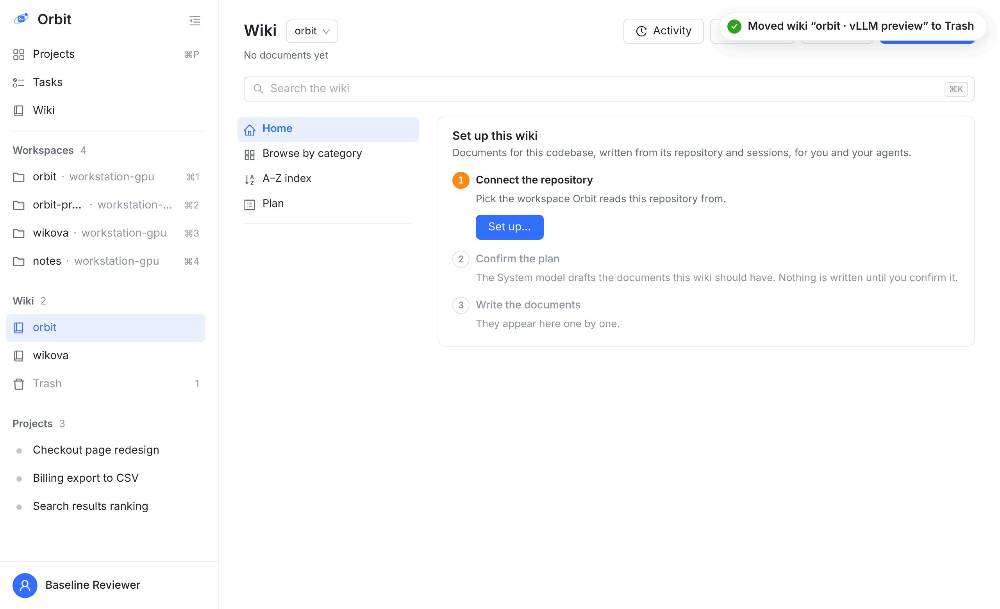
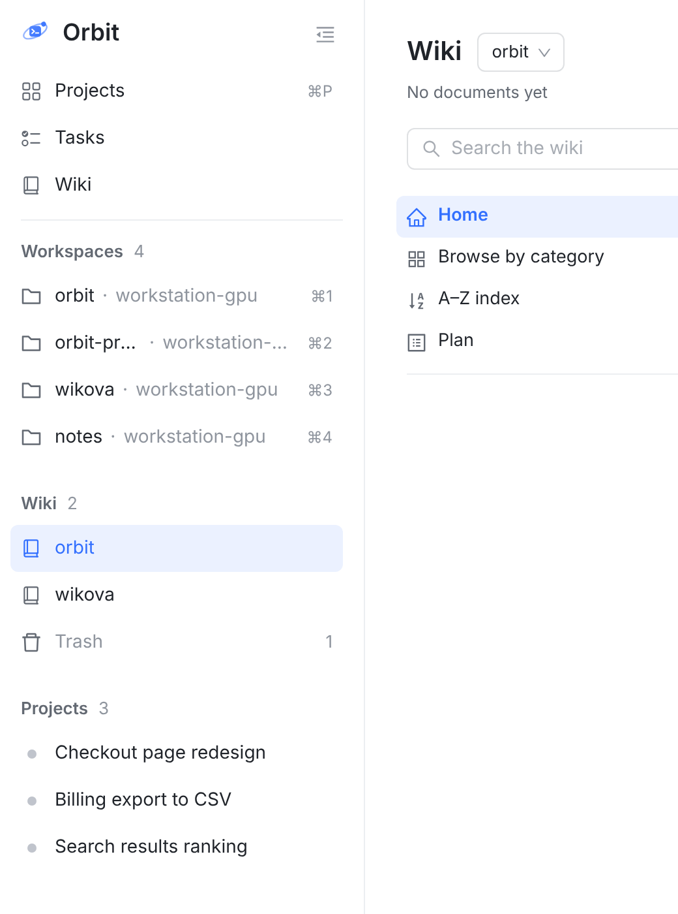
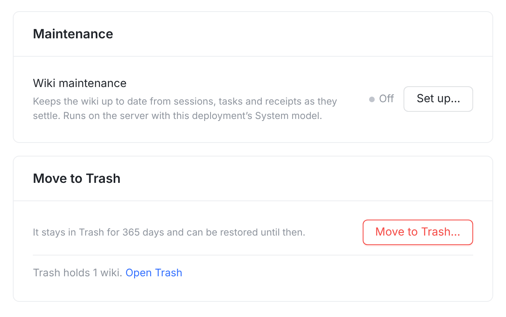
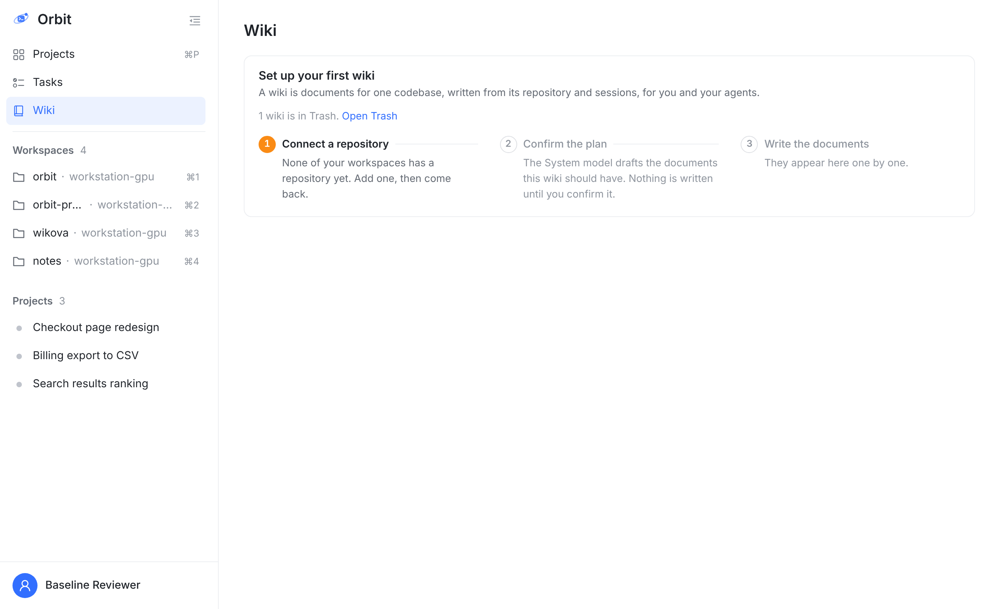
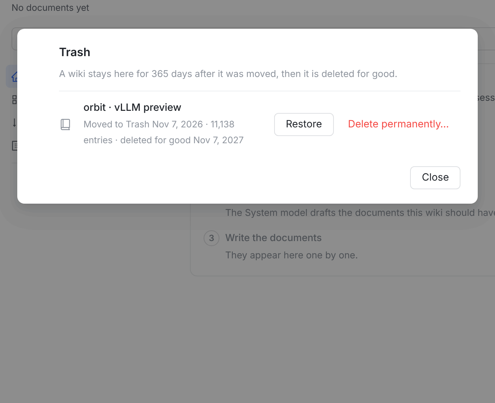
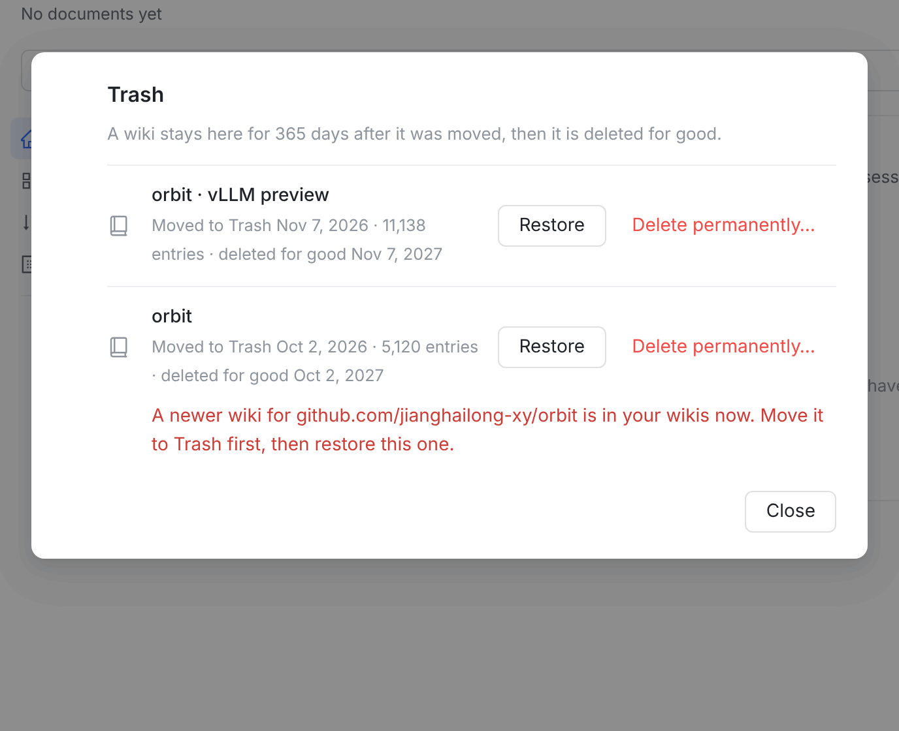
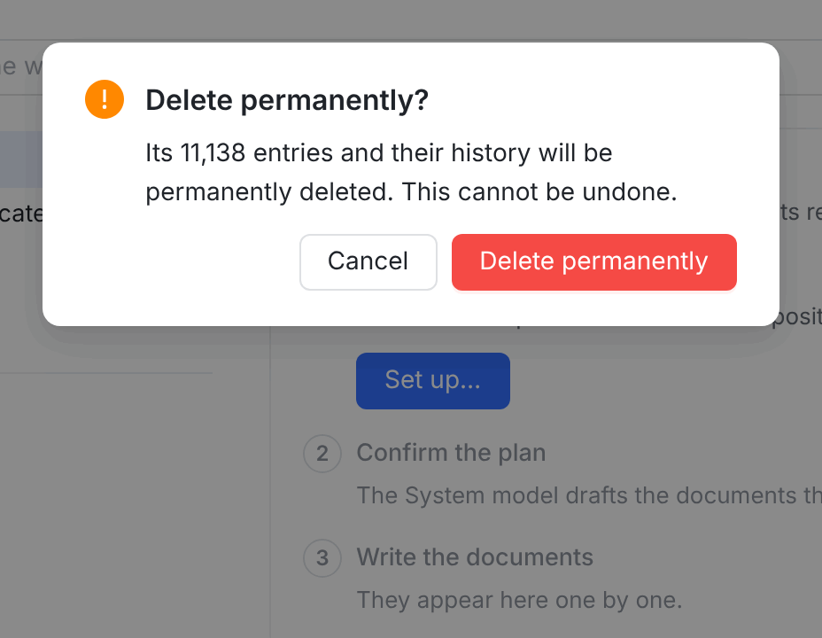

你定了：删除改成先移进回收站，保留 365 天，期间可以恢复，到期再在后台分批清除。点下去时服务端只做一次标记，确认框马上关；不会再像这次一样转一分多钟最后回滚。这一页用线上这版真实网页截图（9dced799a 的构建），新的文案、回收站入口和回收站列表是截图时写在真实页面上的，用的是页面自己的组件和类名。数字是示意。



1叫法和会话一致：菜单、确认框、按钮都叫 Move to Trash，按钮仍是红色，和会话的 Move to Trash? 一样（拍板 1）。Orbit 一致性
2说清楚三件事：马上从列表消失、会话不再读它；数据留 365 天、期间随时能恢复；过期才彻底删除。新词Move wiki “…” to Trash? · It leaves your wikis now, and sessions stop reading it. · Its N entries stay in Trash for 365 days: restore it any time until then. After that it is deleted for good.
3有仓库的 wiki：它在回收站期间，这个仓库的会话一用 wiki 就会建一个新的空 wiki（你上次定的规则不变）。所以多一句，也就有了第 ③ 页的「恢复冲突」。新词Until you restore it, the next session on … to use the wiki starts a new, empty one.




4侧栏 Wiki 组末尾的 Trash 行，灰字，右边是件数；回收站空着时不出现，平时不占地方。新词Moved wiki “…” to Trash · Trash
5设置页和空状态各留一个入口：删掉最后一个 wiki 后侧栏 Wiki 组会整个消失，引导卡片里那一句是唯一能找回的地方。新词It stays in Trash for 365 days and can be restored until then. · Trash holds 1 wiki. Open Trash · 1 wiki is in Trash. Open Trash



6弹窗而不是页面：wiki 的地址是 /wiki/<名字>，单开一个 /wiki/trash 会和叫 trash 的 wiki 撞名。每行：名字、哪天移进来、多少条、哪天彻底删除；右边 Restore 和 Delete permanently…，和会话回收站同样两件事。Orbit 一致性新词Trash · A wiki stays here for 365 days after it was moved, then it is deleted for good. · Moved to Trash … · deleted for good … · Restore
7恢复后：回到侧栏原来的位置，名字、设置、条目、文档、公开链接都回来；维护保持关闭，要你重新打开（见第 ③ 页规则）。新词Restored wiki “…”
8永久删除用会话回收站那句：Delete permanently? · Its N entries and their history will be permanently deleted. This cannot be undone. 点下去同样马上返回，数据在后台分批清掉。Orbit 一致性
手绘，文案和网页逐字相同。原生端没有侧栏 wiki 行，入口是 Wiki 设置页底部，以及没有 wiki 时的空状态；两个以上 wiki 时，标题旁 wiki 选择器底部的 Manage spaces 下面再加一项 Trash。回收站是一个推进去的页面，iOS 左滑一行出 Restore 和 Delete。
It leaves your wikis now, and sessions stop reading it.
Its 11,138 entries stay in Trash for 365 days: restore it any time until then. After that it is deleted for good.
Workspaces and sessions are kept.
iOS / macOS：设置页最后两节：红字 Move to Trash… 加一句 footer，再下面一行 Trash（有东西才出现），推进去是回收站页。确认和永久删除都走现成的 orbitConfirmation（手机 alert，iPad/macOS 是 confirmationDialog）。macOS 在行上右键出同样两项。Orbit 一致性
Android：结构相同，一行下面两个文字按钮；确认用 AlertDialog，和 Delete agent、会话的 Delete Permanently 同款。Orbit 一致性
没有 wiki 时：各端空状态里同一句 1 wiki is in Trash. Open Trash。
恢复被拒：原生端弹 alert，标题 Couldn't restore the wiki，内容就是服务端那句原因。新词
有仓库的 wiki 在回收站期间，仓库的会话一用 wiki 就会建新的（你上次定的）。两个 wiki 不能对应同一个仓库。
| 情况 | 结果 |
|---|---|
| 移进回收站 | 一次很短的写入：wiki 打上删除时间，立即返回。所有读写入口都把它当成不存在：列表、各页面、会话的 wiki 工具、维护、计划、分享链接的公开页。它在跑的作业取消。 |
| 会话 | 没有仓库的 wiki：绑在它上面的会话调 wiki 工具，回现有的 WIKI_SPACE_UNBOUND。有仓库的 wiki：这个仓库的会话会建一个新的空 wiki（你上次定的）。 |
| 公开链接 | 在回收站期间暂停，恢复后自动重新打开。和会话回收站一样。 |
| 恢复 | 回到原来的名字、设置、条目、文档。workspace 回到它里面，除非期间已经进了别的 wiki。维护保持关闭，要你重新打开：否则恢复的一刻会去补一年的记录。名字被新 wiki 占了，就换一个空闲的地址，比如加 -2。 |
| 满 365 天 / 永久删除 | 在后台分小批删除：每批几百条，每批一个短事务。负载高时只是慢一点，不会超时，也不会长时间锁住数据；服务重启后接着删。永久删除点下去马上从回收站消失。 |
| 谁能操作 | 和现在一样，只有你本人：Agent 会话和访问令牌都会被拒，也不提供 MCP 工具或 CLI 命令。 |
| 数据库 | wiki 加删除时间；名字和仓库的唯一约束只算没删除的，好让新 wiki 能建出来。每个读 wiki 的入口都要排除已删除的：加一个普查测试，以后新入口漏了会红。 |
| 这次失败的删除 | 没删掉任何东西：事务超过 60 秒被回滚，preview wiki 原样还在。新做法上线后，它会在你点下去的一瞬间进回收站。 |